7.4 Exercícios finais
E 7.4.1. O valor exato da integral imprópria ∫
01x ln(x)dx é dado por
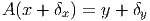
Aproxime o valor desta integral usando a regra de Simpson para n = 3, n = 5 e n = 7.
Como você avalia a qualidade do resultado obtido? Por que isso acontece.
E 7.4.2. O valor exato da integral imprópria ∫
0∞e-x2dx é dado por 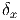. Escreva esta
integral como
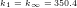 e
aproxime seu valor usando o esquema de trapézios e Simpson para n = 5, n = 7 e
n = 9.
E 7.4.3. Estamos interessados em avaliar numericamente a seguinte integral:
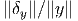
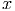
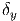 cujo
valor com 10 casas decimais corretas é -.2398117420.
- Aproxime esta integral via Gauss-Legendre com n = 2,n = 3, n = 4, n = 5,
n = 6 e n = 7.
- Use a identidade
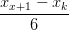
e aproxime a integral ∫
01 ln(x)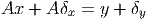 dx numericamente via Gauss-Legendre
com n = 2, n = 3, n = 4, n = 5, n = 6 e n = 7.
- Compare os resultados e discuta levando em consideração as respostas às
seguintes perguntas: 1)Qual função é mais bem-comportada na origem? 2)Na
segunda formulação, qual porção da solução foi obtida analiticamente e, portanto,
sem erro de truncamento?

E 7.4.4. Considere o problema de calcular numericamente a integral I = ∫
-11f(x)dx
quando f(x) = 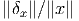.
- O que acontece quando se aplica diretamente a quadratura gaussiana com
um número impar de abscissas?
- Calcule o valor aproximado por quadratura gaussiana com n = 2, n = 4,
n = 6 e n = 8.
- Calcule o valor aproximado da integral removendo a singularidade
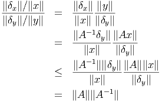
e aplicando quadratura gaussiana com n = 2, n = 4, n = 6 e n = 8.
- Calcule o valor aproximado da integral removendo a singularidade, considerando a
paridade da função
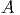
e aplicando quadratura gaussiana com n = 2, n = 4, n = 6 e n = 8.
- Expandindo a função cos(x) em série de Taylor, truncando a série depois do
n-ésimo termos não nulo e integrando analiticamente.
- Aproximando a função cos(x) pelo polinômio de Taylor de grau 4 dado
por
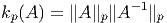 e escrevendo
E 7.4.5. Calcule numericamente o valor das seguintes integrais com um erro relativo
inferior a 10-4.
- ∫
01
 dx
dx
- ∫
01
 dx
dx
- ∫
01
 dx
dx
- ∫
01 ln(x) cos(x)dx
E 7.4.6. Calcule as integrais ∫
01 dx e ∫
01
dx e ∫
01 dx usando procedimentos analíticos
e numéricos.
dx usando procedimentos analíticos
e numéricos.
E 7.4.7. Use a técnica de integração por partes para obter a seguinte identidade
envolvendo integrais impróprias:
 Aplique as técnicas estudadas para aproximar o valor de I e explique por que a integral
da direita é mais bem comportada.
Aplique as técnicas estudadas para aproximar o valor de I e explique por que a integral
da direita é mais bem comportada.
E 7.4.8. Resolva a equação
 com
5 dígitos significativos.
com
5 dígitos significativos.
E 7.4.9. O calor específico (molar) de um sólido pode ser aproximado pela teoria de
Debye usando a seguinte expressão
 onde N é a constante de Avogrado dado por N = 6.022 × 1023 e k
B é a constante
de Boltzmann dada por kB = 1.38 × 10-23. T
D é temperatura de Debye do
sólido.
onde N é a constante de Avogrado dado por N = 6.022 × 1023 e k
B é a constante
de Boltzmann dada por kB = 1.38 × 10-23. T
D é temperatura de Debye do
sólido.
- Calcule o calor específico do ferro em quando T = 200K, T = 300K e
T = 400K supondo TD = 470K.


- Calcule a temperatura de Debye de um sólido cujo calor específico a
temperatura de 300K é 24J∕K∕mol. Dica: aproxime a integral por um
esquema numérico com um número fixo de pontos.
- Melhore sua cultura geral: A lei de Dulong-Petit para o calor específico
dos sólidos precede a teoria de Debye. Verifique que a equação de Debye é
consistente com Dulong-Petit, ou seja:
 Dica: use ey ≈ 1 + y quando y ≈ 0
Dica: use ey ≈ 1 + y quando y ≈ 0